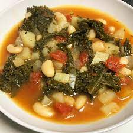

prep: 25m
cook: 30m
difficulty: easy
nutrition
kcal 384
fat 14g
saturates 5g
carbs 43g
sugars 16g
fibre 14g
pretein 16g
salt 1.4g
prep: 25m
cook: 30m
difficulty: easy
kcal 384
fat 14g
saturates 5g
carbs 43g
sugars 16g
fibre 14g
pretein 16g
salt 1.4g
step 1
Heat the oil in a large pan over a medium heat and fry the onions and garlic for 5 mins, then add the celery and peppers. Fry for another 5 mins, adding the smoked paprika in the last minute. Stir in the tomatoes, oregano and stock. Bring to the boil.
step 2
Tip in the penne, green beans and kale, bring back to the boil and cook over a medium heat for 10 mins. Stir in the cherry tomatoes and basil, and cook for a few minutes more until the tomatoes have burst.
step 3
To serve, spoon two portions of the soup into shallow bowls and sprinkle over half the cheese. Keep the remainder for another day. Will keep chilled in an airtight container for up to four days or frozen for up to three months. Reheat in a pan over a low-medium heat until piping hot, then serve with the remaining cheese.